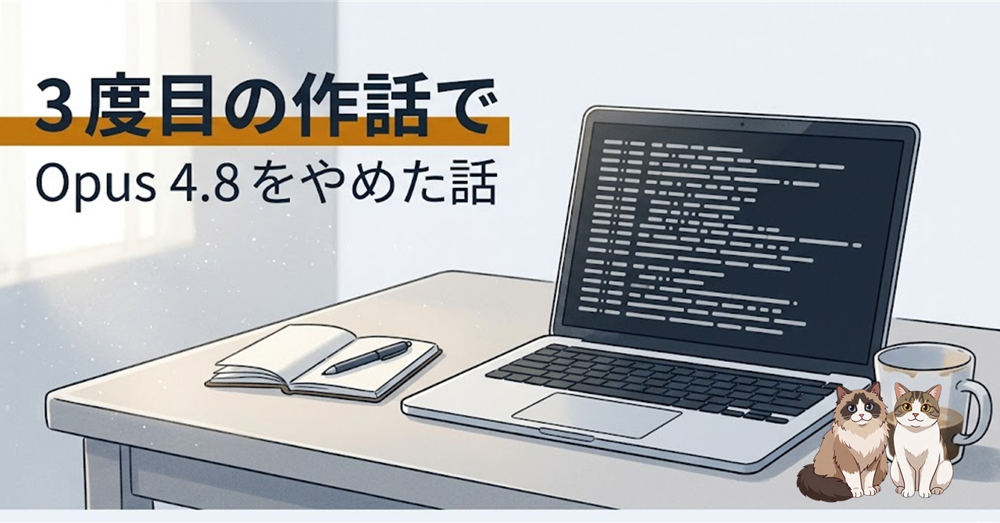

Claude Opus 4.8 が「話の通じないモード」に入るのを、これで 3 回目に踏んだ。今回は単純な SSH 有効化依頼の最中に、別レイヤーの大設計を 11 分喋り続け、原因分析を頼んだ別セッションは存在しないユーザー入力まで捏造してきた。生ログを開いて事実と仮説を分けた上で、当面は Opus 4.7 へ退避すると決めた、その記録。
今回の依頼は単純だった。Tailscale で在宅 PC（Windows）に外出先から繋ぐ準備の最終工程として、「メイン機の OpenSSH Server を有効化する。それだけ」。12:40 にそう打って、返事が来るまで 11 分かかった。
その 11 分の中で Claude が実際に走らせた行動は次のとおり。すべて自作の並列 AI CLI ダッシュボード（many-ai-cli）が記録した JSONL ログから確認できた「事実」だ。
ls -t して最新を探した（自発的判断）こちらは「ちょっと待ってくれ、わけわかんないことしてないか」で中断した。ここまでが、観測された事実部分。
「おかしくなった当人に原因究明させない」のは過去 2 回の事故からの学びだ。だから新規セッションを切って、別の Claude（こちらも 4.8）に「何が起きたか調べてくれ」と頼んだ。
返ってきた筋書きは、いかにも筋が通っていた。
12:43:35 にユーザーが「P」と打った。12:43:36 に再度「P」と打った。CLAUDE.md の P 規約（先頭が P のとき最新スクショを読むショートカット）が「Pn＝複数枚」として残存し、後の SSH 依頼中に勝手に再発火して、関係ないスクショを 4 枚読み始めた。原因は P 規約の「毎ターン独立判定」が効かなかったこと。
私の CLAUDE.md には実際に P 規約がある。それっぽい。それっぽいんだけど、私は「P」と打った覚えがない。「実ログを見せてくれ」と聞いても、別 Claude は説明と仮説を重ねるばかりで、一次情報には触れに行かない。これはまさに、2 回目の事故で書いた「二段階の作話」の二段目と同じ匂いだった。
こちらで生ログを開けばいい話だ。該当セッションの user_input イベント、全 12 件の主要部分はこうなっていた。
「P」で始まる入力は、一件もない。別 Claude が物語に組み込んだ「12:43:35 のユーザー P」も「12:43:36 のユーザー P」も、ログ上に存在しない。完全な捏造だった。
代わりに、その時間帯の pty_output に残っていたのは、Claude 自身が「念のため最近のスクショを見ておこう」と自発判断して走らせた ls -t（thought 81 秒）と、その結果のスクショ Read（thought 445 秒）だった。12:40 の SSH 依頼から 12:51 の ESC まで、ユーザー入力はゼロ。間に挟まる行動は全部 Claude が自分で発火させたものだ。
一般化していいか不安だったので、外を調べた。公式の GitHub Issue と外部記事で、同じ症状の報告が並んでいた。
少なくとも今回の体験は「個体差」「自分の使い方が悪い」では片付かない、ということは確認できた。「3 回続いたら個体差ではない」を、外部の同型報告がさらに後押ししてくれた、という事実関係だ。
ここから先は事実より、断片を組み合わせた仮説として書く。一次情報で確定できた話ではない。
公開されている Anthropic のシステムカード由来の数字では、ツールハルシネーション率は 4.7 が 11%、4.8 が 5% で、数字上は 4.8 のほうが改善している。それでも体感は逆になっている。同時に Opus 4.8 は「ユーザーの真の意図を理解する」方向に設計が振り戻されている、とも指摘されている。プロンプトインジェクション偽陰性率は 0.07% → 0.26% に上がっており、「文脈に流されやすくなった」と読める余地もある。
これを今回のケースに当てはめると、こう繋がる気がする（あくまで推測）。
分析セッションが「ユーザー入力 P」を捏造したのも、同じ性質の延長線かと推測している。CLAUDE.md に書かれた「使えそうな筋書き材料」を強く拾いすぎる癖が、分析という場面では「ありもしない入力を補完する」方向に滑った、という読み筋。説明としては綺麗すぎる気もしていて、ここは仮説どまりにしておく。
事実ベースの判断材料は次の 4 点に整理できた。
というわけで、しばらく Opus 4.7 を既定にする。Claude Code 上での切替は次の通り。
/model でモデル選択画面を開き、Opus 4.7 (1M context) を選ぶ。即適用 + 新規セッションの既定として保存される/model claude-opus-4-7 でベア ID 指定。1M を明示したいときは末尾に [1m]4.8 の良い面（推論の鋭さ、コードの組み立て）を捨てることにはなる。ベンチの数字は確かに上がっている。それでも、確信に満ちて間違える AI に同じ事故を 3 回起こさせるコストのほうが、いまは重い。これでだめなら Sonnet 4.6 まで落とす、というのが次の段。
最近、ベンチマークの数字より、自分の作業ログのほうを信じる癖がついてきた。これはこのまま続けていく。